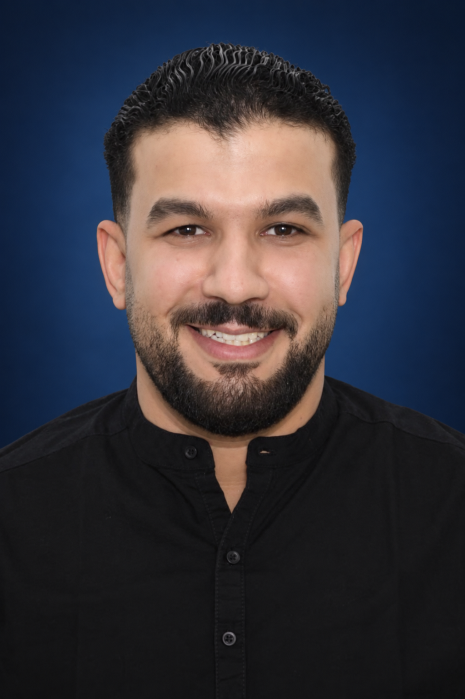

Own the outcome
I stay accountable from technical direction and implementation through release quality and production performance.
SWIFT · SWIFTUI · UIKIT / RIYADH, SAUDI ARABIA
I architect and ship secure iOS products built to perform at scale.
7+ years delivering production iOS applications across government, energy, commerce, and education—combining technical direction, hands-on engineering, and ownership after release.

01 / ABOUT
I build iOS products that millions of people rely on, from national utility services to secure government workflows.
I lead products from architecture decisions through App Store delivery, translating complex requirements into maintainable systems and clear user journeys.
At 2P Perfect Presentation, I set architecture and code-quality standards for a team of engineers. My background also spans technical product management, cross-functional delivery, and mentoring developers and students—giving me a practical view of the whole product lifecycle.
I stay accountable from technical direction and implementation through release quality and production performance.
I build modular foundations that keep complex products easier to extend, test, and maintain.
I turn trade-offs into clear decisions, review code with intent, and help engineers move forward with confidence.
02 / IMPACT
A concise view of the scale, reliability, delivery, and people development behind my work.
Customer journeys delivered for a national utility platform.
Production stability improvement for Ifta Employee.
Delivered across public, employee, and scholar-facing government apps.
Released across government, energy, commerce, and education.
Supported through technical direction, standards, and code reviews.
Mentored through programming and software-engineering practice.
03 / SELECTED WORK
Public-facing apps and enterprise systems.
A selection of the products I've helped build.
04 / EXPERIENCE
Engineering, product leadership, and teaching experience across high-impact digital products.
05 / EXPERTISE
I combine native iOS craft with architecture, performance, security, and delivery practices shaped by real production systems.
06 / EDUCATION & LEARNING
Computer science, native mobile engineering, and business training that support both technical depth and product judgment.
Suez Canal University
Faculty of Computers and Informatics
Information Technology Institute (ITI)
Professional Development Institute
CERTIFICATIONS & ADDITIONAL LEARNING
07 / LET'S CONNECT
Open to Senior and Lead iOS opportunities where architecture, product ownership, and production quality matter.
sayed.m.abdo123@gmail.com ↗Based in Riyadh, Saudi Arabia.
Arabic — Native · English — Professional working proficiency